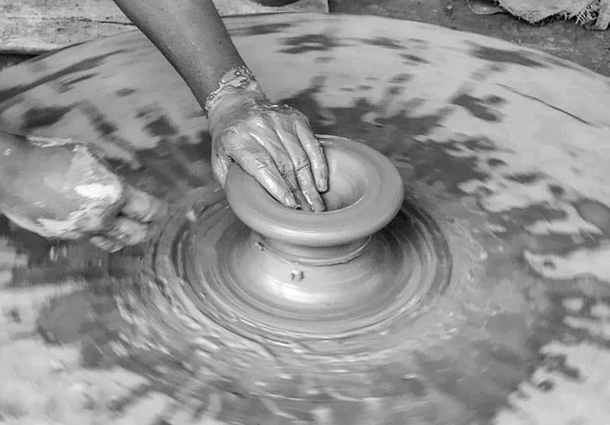

Hands in Clay
2026-03-09
Nobody warns you about the first ten minutes. You sign up for a pottery class imagining bowls — smooth, round, satisfying bowls you will eat soup out of for years. Instead you get a lump of cold, gray clay, a wheel that spins faster than seems reasonable, and an instructor saying the kindest, most misleading sentence in all of craft education: "First, we center."
Centering sounds like a preliminary step, a bit of housekeeping before the real work. It is not. Centering is the whole lesson, the first day and arguably the first month, and everything else in pottery is a footnote to it. Until the clay sits dead-center on the wheel, spinning so calmly it looks almost still, nothing else you do will work. The walls will wobble. The rim will wander. The bowl will have opinions. So you begin, hands wet, elbows braced, leaning your whole weight into a spinning lump that has absolutely no interest in being centered.
The lump fights back, politely
Wet clay has a texture like nothing else on earth — cool, dense, slightly alive-feeling, as if it were considering becoming something. Press one side and it bulges on the other. Push too hard and it flops into a sad spiral. Push too timidly and it just keeps orbiting, smug and off-balance, slapping your palms once a second like a slow metronome gone wrong.
The instructor circles the room adjusting elbows and wrists by millimeters. "Brace against your body. Let the wheel do the work. You're not pushing the clay to the center — you're holding still and letting it come to you." This sounds like philosophy and turns out to be physics, and there's a tidy explanation of HowStuffWorks for how a potter's wheel actually turns — a motor, a flywheel's worth of momentum, and a surface that never stops moving under your hands. But knowing it and feeling it are different countries. Somewhere around minute twenty, if you're lucky, the wobbling slows. The lump goes quiet under your palms. It spins round and true and strangely peaceful, and you understand that the clay didn't change. You did.
Then, astonishingly, a bowl
Once the clay is centered, the instructor talks you through opening it: thumbs pressed gently into the middle, a well forming, then fingers drawing the walls upward, slow and wet and patient. It is not graceful. Your first wall will be thick at the bottom and thin at the top, or the reverse, or both in different places, like a cake made by weather. The rim will tilt. At some point, pulling too eagerly, you will tear the whole thing and it will collapse into a wet ribbon, and the room will make a sympathetic noise, and the instructor will say the second-most important sentence in pottery: "Good. Now you know how that feels."
Because here is the secret the class is really teaching: clay forgives. A collapsed bowl is not a ruined bowl. It is clay again. You scrape it off the wheel, slap it onto the wedging table, knead out the air and the water and the disappointment, and it becomes a fresh lump, indistinguishable from the one you started with. No canvas lets you do that. No wood, no paper, no yarn. Clay alone offers a full, honest undo, as many times as you need it.

Photo: Wikimedia Commons
The bowls you keep anyway
By the end of a first course, most people have a small, uneven family of objects: a cup that leans, a dish of mysterious purpose, and at least one bowl that holds together and rings faintly when you tap it. These are not the bowls from the pottery shop window. They are heavier, humbler, and permanently a little bit crooked — and their makers would not trade them for porcelain.
There is a reason the wobbly ones get kept. A first bowl is a record of a specific afternoon: the wobble is where your hands hesitated, the thick base is the part you were afraid to thin, the thumbprint near the rim is yours and no one else's, pressed in forever. Use it for keys, for paperclips, for the three lemons that live on the counter. Every time you pick it up, it tells you the truth about learning anything — that the first version is supposed to be crooked, and that crooked is not the same as failed.
Glaze day, or the great reveal
If throwing is about control, glazing is about surrender. You dip your fired bowl into a bucket of what looks like muddy paint, in a color with an unhelpful name, and you are told the finished piece will be — blue? Green? Something with depth, anyway. Glazes are chemistry wearing a disguise: minerals and heat conspiring in a kiln you do not get to peek into, turning dull coatings into glass, matte into shine, pale gray into a color deep enough to fall into. Collections like those at the Metropolitan Museum of Art hold ceramics thousands of years old whose glazes still glow — proof that this particular gamble between mud and fire is one of the oldest bargains humans make.
So glaze day ends with a line of doubtful, dripping objects and a week of waiting. And when the kiln finally opens, there is always a gasp from somebody — a color that came out richer than promised, a drip that stopped in exactly the right place, a bowl that is, against all precedent, genuinely beautiful. Not always yours. But sometimes.
That is the hook of the whole hobby, in the end. Pottery is slow, muddy, failure-rich, and endlessly restartable — and every so often the wheel, the clay, your hands, and the fire all agree at once, and you get to hold the evidence. You can always re-wedge and begin again. Most people, after the first class, do.